Experiência no Brasil e no exterior, com passagem recente pela LDU Quito. Instrutor da TotalFut e da CBF Academy e autor de Periodização Tática, publicado em três idiomas.
Clubes:

Participação confirmada23, 25 e 27 de novembro 2026
Bola Parada Ofensiva
e Defensiva
Conceitos, treinamento, planificação e estratégias aplicadas ao futebol de elite.
On-line, ao vivo e gravado. Acesso vitalício.
Conheça o Summit 2026